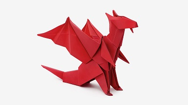

Origami is de uit China afkomstige kunst van het vouwen van papier. In origami wordt een beperkt aantal vouwen gebruikt, maar door de combinatie hiervan zijn intrigerende ontwerpen mogelijk. De kunst ontstond in China in de eerste of tweede eeuw, kort na de uitvinding van het papier. Van daar uit is origami naar Japan overgewaaid, waar het de huidige, bekende vorm heeft gekregen. In het algemeen beginnen origami-ontwerpen met een vierkant stuk papier, waarvan de zijdes verschillend gekleurd kunnen zijn. Het papier mag wel gevouwen worden, maar er mag niet in geknipt worden. Japans origami wordt al toegepast sinds de Edoperiode (1603-1867). In tegenstelling met wat algemeen wordt aangenomen, wordt in de Japanse origami soms ook met rechthoekig en rond papier gewerkt. In tegenstelling tot origami wordt bij kirigami wel in het papier gesneden. In moderne ingewikkelde origami-ontwerpen wordt niet meer gewerkt met een instructie stap voor stap, maar moet het papier worden voorgevouwen (of voorgekreukt) langs allerlei lijnen, en moeten de vouwen daarna op de juiste wijze naar elkaar toe worden gebracht. Ondersteund met een computer is het zo mogelijk zelfs een Schwarzwalder koekoeksklok met koekoek te vouwen. Voor meer informatie hierover:
Bijna alle vlakke materialen kunnen gebruikt worden voor origami, zolang er maar mee gevouwen kan worden. Origamipapier, vaak aangeduid als "kami" (Japans voor papier), wordt verkocht in voorverpakte vierkanten van verschillende afmetingen variërend van 2,5 cm tot 25 cm of meer. Over het algemeen is het papier aan een kant gekleurd en aan de andere kant wit. Er bestaan echter ook meerkleurige en papier met patronen. Origami papier weegt iets minder dan kopieerpapier, waardoor het geschikt is voor een breder scala aan modellen. Het is te koop in hobbyzaken.